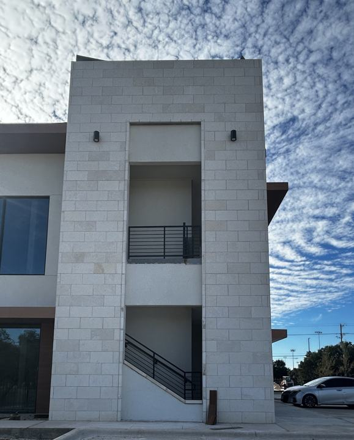
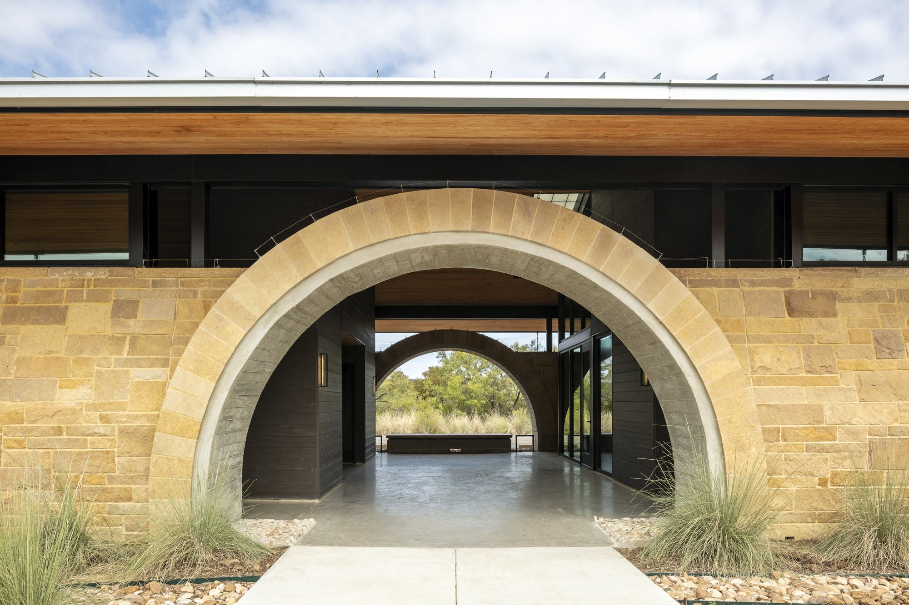
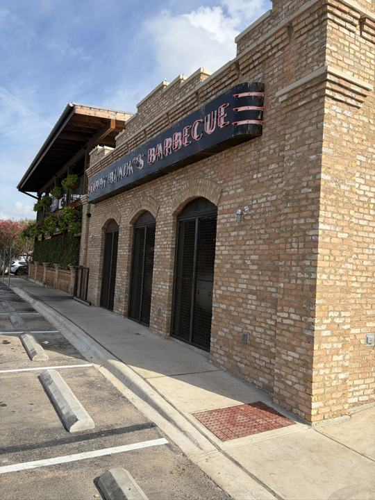

01
CMU / Block
Structural and architectural block: load-bearing walls, infill at concrete frames, site walls, screen walls and dumpster enclosures — grouted, reinforced and built to the plans and specs.

Commercial Masonry · Austin & Central Texas · Since 2016
CMU, brick and stone for general contractors who need a masonry sub that prices it right, staffs it right, and keeps the schedule moving.
Inks Lake State Park HQ — masonry by ATX Masonry
Featured project
Park headquarters, Burnet County · Masonry by ATX Masonry
What we build

Structural and architectural block: load-bearing walls, infill at concrete frames, site walls, screen walls and dumpster enclosures — grouted, reinforced and built to the plans and specs.

Face brick veneers, arches and detailed coursing, paired with cast stone trim, sills and caps for retail, restaurant, civic and multi-building work.
Natural and dimensional stone veneer, limestone banding and towers that give a building its Hill Country character.
Also: stucco and cast stone, coordinated with the rest of your envelope scope.
Project gallery
About ATX Masonry
Scott Gilger founded ATX Masonry in 2016. The first job was a single dumpster enclosure. Everything since has been earned one wall at a time.
General contractors need a masonry sub they can rely on: one who prices the job right, staffs it right, and keeps the schedule moving. ATX Masonry has been that partner since Scott Gilger founded the company in 2016.
We install brick, stone, CMU, and stucco on commercial projects across Austin and Central Texas. Our work ranges from site walls and dumpster enclosures to retail centers, industrial buildings, civic buildings, educational facilities, and multi-building developments. Every job gets the same approach.
We started with one small project and grew by earning repeat work from the contractors we build for. We'd like to earn yours.
How we work
Our bids spell out quantities, scope, and exclusions, so you know exactly what's included and there are no surprises at buyout.
We plan manpower around your schedule and keep experienced foremen on site from layout to final cleanup.
We build to the plans and specs, coordinate with the other trades, and close out punch lists quickly.
You'll work directly with our project manager and superintendents, and the person who estimated your job stays involved through construction.
The team
President & Preconstruction Services
General Superintendent
Field Operations Manager
Project Superintendent
Project Manager
Estimator
Careers
We are hiring masons, laborers, equipment operators.
Contact
Send plans and specs, or give us a call. We'll get you a clear number.
Phone is for calls only.
PO Box 162665
Austin, TX 78716
Austin & Central Texas